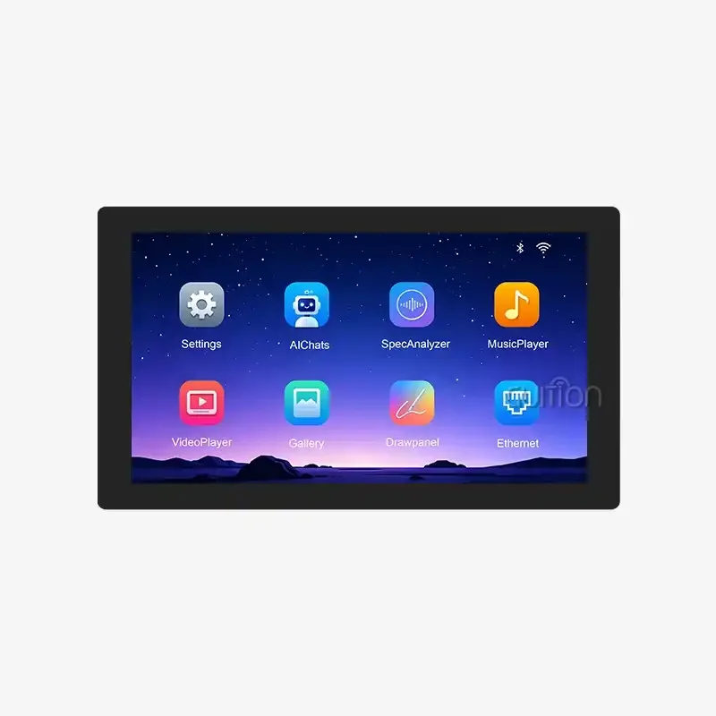

JC1060F570C_I_W
Guition · ESP32-S31 7 inch display
JC1060F570C_I_W is a 7" 1024x600 IPS Capacitive touch ESP32 display board by Guition based on the ESP32-S31 with 16MB flash, 16MB PSRAM.
Features, ports & interfaces
- Capacitive touch
- 16 MB PSRAM
- 16 MB flash
- microSD (TF) card slot
- Wi-Fi 6 – as stated by the vendor
- Bluetooth + Classic
- GPIO / IO port expansion
- Lithium battery interface
Specifications
| Parameter | Value | Source |
|---|---|---|
| Screen size | 7" | source |
| Resolution | 1024x600 | source |
| Panel | IPS | source |
| Shape | Rectangular | |
| Display driver | JD9165 | source |
| Touch | Capacitive | source |
| MCU / SoC | ESP32-S31-WROOM-1-N16R16V | source |
| MCU family | ESP32-S31 | |
| CPU frequency | 360MHz Dual-core | source |
| Flash | 16MB | source |
| PSRAM | 16MB | source |
| Wi-Fi | Yes | |
| Bluetooth | Yes | |
| Category | ESP32-S31 Display Module | |
| Active area | 154.21×85.92mm | source |
| Colors | 24-bit RGB (16.7M colors) | source |
| Connectivity | WiFi6, Classic Bluetooth | source |
| Dimensions | 181.80×113.72mm | source |
| Expansion / IO | TF card slot, IO ports, Lithium battery interface | source |
| Memory | 320KB ROM, 512KB Shared SRAM, 32KB Low-Power SRAM | source |
| Operating temp. | -20℃ to 70℃ | source |
| Power consumption | Approximately 600mA | source |
| Storage temp. | -30℃ to 80℃ | source |
| Vendor | Guition | |
| Viewing angle | IPS Full Viewing | source |
| Operating voltage | 5V | source |